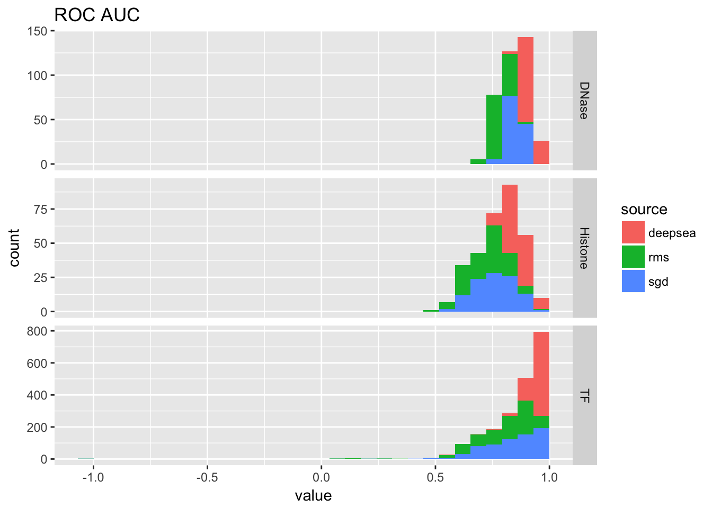
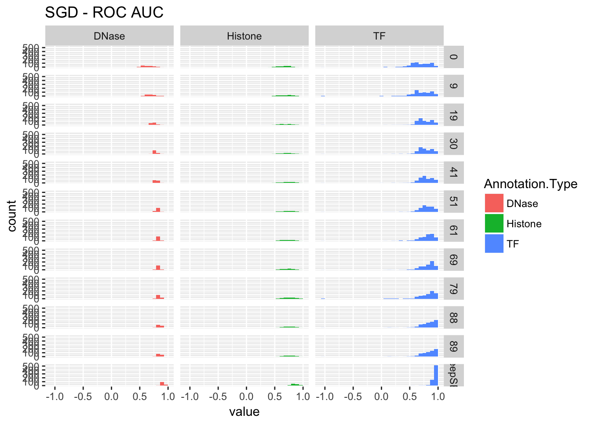
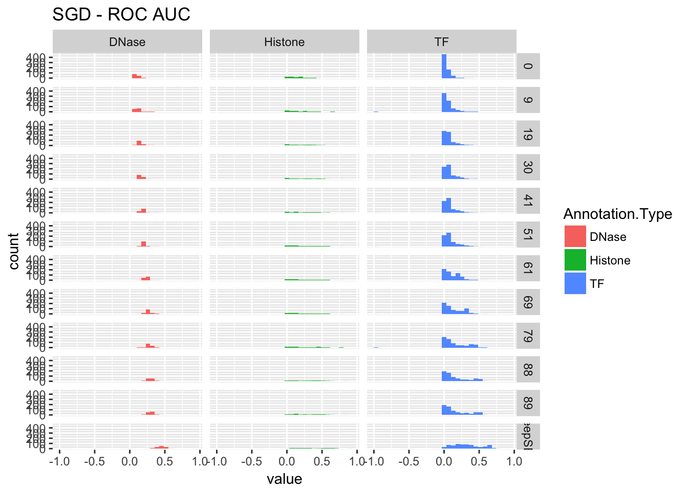

Deep brain - Training - Type 2
Yanyu Liang
19 April, 2017
1 Overview
- Train a model with/without pre-trained weights initialization.
- Use DeepSEA sequences.
- Regularization: at present, NO penalty is applied.
2 Prepare data for training
3 Train w/o weights initialization
3.1 Results
source('../../../mylib/my_r.R')
library(ggplot2)
library(reshape2)
rmsprop <- read.table('../data/type2_040617_00_04_09_17.csv', sep = ',', header = T)
sdg <- read.table('../data/type2_040717_00_04_09_15_19_25_30_36.csv', sep = ',', header = T)
deepsea <- read.table('../data/aucs.txt', sep = '\t', header = T)
deepsea$DeepSEA.ROC.AUC <- as.numeric(as.character(deepsea$DeepSEA.ROC.AUC))## Warning: NAs introduced by coerciondeepsea$DeepSEA.PR.AUC <- as.numeric(as.character(deepsea$DeepSEA.PR.AUC))## Warning: NAs introduced by coercion3.2 Training
rmsprop.loss <- rmsprop[rmsprop$data == 'all', ]
ggplot(rmsprop.loss) + geom_line(aes(x = epoch, y = value, color = variable)) + ggtitle('RMSprop convergence')sdg.loss <- sdg[sdg$data == 'all', ]
ggplot(sdg.loss) + geom_line(aes(x = epoch, y = value, color = variable)) + ggtitle('SGD convergence')
3.3 Performance
Select the best model according to the validation loss.
select_best <- function(rmsprop.loss, rmsprop){
rms.val_loss <- rmsprop.loss[rmsprop.loss$variable == 'val_loss', ]
rmsprop.best <- rms.val_loss[order(rms.val_loss$value)[1],]
print(rmsprop.best)
bestmode.rms <- rmsprop[rmsprop$epoch == rmsprop.best$epoch,]
return(bestmode.rms)
}
bestmodel.rms <- select_best(rmsprop.loss, rmsprop)## X data epoch value variable
## 23 0 all 0 0.0699 val_lossbestmodel.sgd <- select_best(sdg.loss, sdg)## X data epoch value variable
## 27 0 all 36 0.0736 val_lossanno_to_type <- function(anno){
dnase.ind <- anno == 'DNase'
histone.ind <- grepl('^H[0-9]', anno)
Annotation.Type <- rep('TF', length(anno))
Annotation.Type[histone.ind] <- 'Histone'
Annotation.Type[dnase.ind] <- 'DNase'
return(Annotation.Type)
}
extract_by_col <- function(x, i){
temp <- strsplit(x, '<>')[[1]]
return(temp[i])
}
bestmodel.rms$data <- as.character(bestmodel.rms$data)
bestmodel.rms$Annotation.Type <- anno_to_type(sapply(bestmodel.rms$data, function(x){extract_by_col(x, 2)}))
bestmodel.rms$Cell.Type <- sapply(bestmodel.rms$data, function(x){extract_by_col(x, 1)})
bestmodel.rms$source <- 'rms'
# bestmodel.rms$value[bestmodel.rms$value == -1] <- NA
bestmodel.sgd$data <- as.character(bestmodel.sgd$data)
bestmodel.sgd$Annotation.Type <- anno_to_type(sapply(bestmodel.sgd$data, function(x){extract_by_col(x, 2)}))
bestmodel.sgd$Cell.Type <- sapply(bestmodel.sgd$data, function(x){extract_by_col(x, 1)})
bestmodel.sgd$source <- 'sgd'
# bestmodel.sgd$value[bestmodel.sgd$value == -1] <- NA3.3.1 AUCs of best model
bestmodel.rms.aucs <- bestmodel.rms[bestmodel.rms$variable == 'roc_auc' | bestmodel.rms$variable == 'pr_auc', ]
bestmodel.sgd.aucs <- bestmodel.sgd[bestmodel.sgd$variable == 'roc_auc' | bestmodel.sgd$variable == 'pr_auc', ]
deepsea.aucs <- melt(deepsea[, c('Cell.Type', 'TF.DNase.HistoneMark', 'Treatment', 'DeepSEA.ROC.AUC', 'DeepSEA.PR.AUC'), ], id.vars = c('Cell.Type', 'TF.DNase.HistoneMark', 'Treatment'))
deepsea.aucs$variable <- as.character(deepsea.aucs$variable)
deepsea.aucs$Annotation.Type <- anno_to_type(deepsea.aucs$TF.DNase.HistoneMark)
deepsea.aucs$variable[deepsea.aucs$variable == 'DeepSEA.ROC.AUC'] <- 'roc_auc'
deepsea.aucs$variable[deepsea.aucs$variable == 'DeepSEA.PR.AUC'] <- 'pr_auc'
deepsea.aucs$source <- 'deepsea'auc_table <- rbind(bestmodel.rms.aucs[, c('variable', 'value', 'Annotation.Type', 'source')],
bestmodel.sgd.aucs[, c('variable', 'value', 'Annotation.Type', 'source')],
deepsea.aucs[, c('variable', 'value', 'Annotation.Type', 'source')])
ggplot(auc_table[auc_table$variable == 'roc_auc',]) + geom_histogram(aes(x = value, fill = source)) + facet_grid(Annotation.Type~., scale = 'free_y') + ggtitle('ROC AUC')## `stat_bin()` using `bins = 30`. Pick better value with `binwidth`.## Warning: Removed 1 rows containing non-finite values (stat_bin).
ggplot(auc_table[auc_table$variable == 'pr_auc',]) + geom_histogram(aes(x = value, fill = source)) + facet_grid(Annotation.Type~., scales = 'free_y') + ggtitle('PR AUC')## `stat_bin()` using `bins = 30`. Pick better value with `binwidth`.## Warning: Removed 1 rows containing non-finite values (stat_bin).3.3.2 Compare with type1 (best model)
We make the comparison on E081, E082, E129, Noonan only.
bestmodel.type1 <- read.table('../data/best_model_type1_scores.txt', sep = '\t', header = T)
bestmodel.type1$source <- 'type1'
bestmodel.type1$Cell.Type <- bestmodel.type1$data
bestmodel.rms.subset <- bestmodel.rms[bestmodel.rms$data %in% c('E081<>DNase<>None', 'E082<>DNase<>None', 'E129<>H3K9me3<>None', 'Noonan<>H3K27ac<>None'),]
bestmodel.sgd.subset <- bestmodel.sgd[bestmodel.sgd$data %in% c('E081<>DNase<>None', 'E082<>DNase<>None', 'E129<>H3K9me3<>None', 'Noonan<>H3K27ac<>None'),]
temp <- dcast(bestmodel.rms.subset[,c(4,5,7,8)], source + Cell.Type ~ variable)
temp <- rbind(temp, dcast(bestmodel.sgd.subset[,c(4,5,7,8)], source + Cell.Type ~ variable))
temp <- rbind(temp, bestmodel.type1[, colnames(temp)])
temp.melted <- melt(temp, id.vars = c('source', 'Cell.Type'))
temp.melted[which(temp.melted$value == -1), ]$value <- NA
temp.melted$variable <- factor(temp.melted$variable, levels = c('cross_entropy', 'accuracy', 'roc_auc', 'pr_auc', levels(temp.melted$variable)[4 : 9]))
ggplot(temp.melted) + geom_bar(aes(x = variable, y = value, fill = source), position = 'dodge', stat = 'identity') + facet_wrap(~Cell.Type) + theme(axis.text.x = element_text(angle = 30, hjust = 1)) + ggtitle('Performance of best models on four selected data sets')## Warning: Removed 8 rows containing missing values (geom_bar).Issues in training: Some instances have very large activation at the feature representation layer. See analysis below.
TODO: Add penalty terms and use sgd with momentum. See technical memo here
TODO: Use weighted hinge loss.
3.3.3 Performance change along training
3.3.3.1 SGD
performance_cross_epoch <- function(scores, deepsea.aucs, title){
sdg.aucs <- scores[scores$variable %in% c('pr_auc', 'roc_auc', 'cross_entropy'),]
sdg.aucs$data <- as.character(sdg.aucs$data)
sdg.aucs$Annotation.Type <- anno_to_type(sapply(sdg.aucs$data, function(x){extract_by_col(x, 2)}))
sdg.aucs.plot <- sdg.aucs[, c('epoch', 'value', 'variable', 'Annotation.Type')]
deepsea.aucs.plot <- deepsea.aucs[, c('value', 'variable', 'Annotation.Type')]
deepsea.aucs.plot$epoch <- 'DeepSEA'
aucs.plot <- rbind(sdg.aucs.plot, deepsea.aucs.plot)
aucs.plot$epoch <- factor(aucs.plot$epoch, levels = c(unique(sdg.aucs.plot$epoch), unique(deepsea.aucs.plot$epoch)))
p1 <- ggplot(aucs.plot[aucs.plot$variable == 'roc_auc',]) + geom_histogram(aes(x = value, fill = Annotation.Type)) + facet_grid(epoch~Annotation.Type) + ggtitle(paste(title, '- ROC AUC'))
p2 <- ggplot(aucs.plot[aucs.plot$variable == 'pr_auc',]) + geom_histogram(aes(x = value, fill = Annotation.Type)) + facet_grid(epoch~Annotation.Type) + ggtitle(paste(title, '- ROC AUC'))
return(list(roc=p1, pr=p2, data=aucs.plot))
}
re <- performance_cross_epoch(sdg, deepsea.aucs, 'SGD')
re$roc## `stat_bin()` using `bins = 30`. Pick better value with `binwidth`.## Warning: Removed 1 rows containing non-finite values (stat_bin).
re$pr## `stat_bin()` using `bins = 30`. Pick better value with `binwidth`.## Warning: Removed 1 rows containing non-finite values (stat_bin).
re <- performance_cross_epoch(rmsprop, deepsea.aucs, 'RMSprop')
re$roc## `stat_bin()` using `bins = 30`. Pick better value with `binwidth`.## Warning: Removed 1 rows containing non-finite values (stat_bin).re$pr## `stat_bin()` using `bins = 30`. Pick better value with `binwidth`.## Warning: Removed 1 rows containing non-finite values (stat_bin).3.3.4 Kernel norm
Here we check the L2 norm of kernel corresponding to every neuron.
- DeepSEA model
$ python my_scripts/post_check_constraint.py ../DeepSEA/debug/keras_deepsea.hdf5 L2 --threshold 0.9
--- conv1d_1 ------- L2 report ----------
# kernels passing the threshold 0.9 is 0
--- conv1d_2 ------- L2 report ----------
# kernels passing the threshold 0.9 is 0
--- conv1d_3 ------- L2 report ----------
# kernels passing the threshold 0.9 is 0
--- dense_1 ------- L2 report ----------
# kernels passing the threshold 0.9 is 10
range 0.00 - 0.90 : 915
range 0.90 - 0.91 : 10
--- dense_2 ------- L2 report ----------
# kernels passing the threshold 0.9 is 23
range 0.00 - 0.90 : 896
range 0.90 - 0.91 : 23- Type2 with RMSprop (epoch 1, best)
$ python my_scripts/post_check_constraint.py my_train/type2_040617/00-0.0699-0.0808.hdf5 L2 --threshold 0.9
--- conv1d_1 ------- L2 report ----------
# kernels passing the threshold 0.9 is 10
range 0.00 - 0.90 : 310
range 0.90 - 1.60 : 5
range 1.60 - 3.22 : 5
--- conv1d_2 ------- L2 report ----------
# kernels passing the threshold 0.9 is 52
range 0.00 - 0.90 : 428
range 0.90 - 7.89 : 45
range 7.89 - 15.80 : 7
--- conv1d_3 ------- L2 report ----------
# kernels passing the threshold 0.9 is 31
range 0.00 - 0.90 : 929
range 0.90 - 2.21 : 27
range 2.21 - 4.43 : 4
--- dense_1 ------- L2 report ----------
# kernels passing the threshold 0.9 is 925
range 0.00 - 0.90 : 0
range 0.90 - 7.80 : 861
range 7.80 - 15.61 : 64
--- dense_2 ------- L2 report ----------
# kernels passing the threshold 0.9 is 923
range 0.00 - 0.90 : 0
range 0.90 - 17.45 : 284
range 17.45 - 34.92 : 639- Type2 with RMSprop (epoch 10)
$ python my_scripts/post_check_constraint.py my_train/type2_040617/09-0.0727-0.0810.hdf5 L2 --threshold 0.9
--- conv1d_1 ------- L2 report ----------
# kernels passing the threshold 0.9 is 23
range 0.00 - 0.90 : 297
range 0.90 - 9.41 : 19
range 9.41 - 18.82 : 4
--- conv1d_2 ------- L2 report ----------
# kernels passing the threshold 0.9 is 78
range 0.00 - 0.90 : 402
range 0.90 - 17.02 : 64
range 17.02 - 34.04 : 14
--- conv1d_3 ------- L2 report ----------
# kernels passing the threshold 0.9 is 63
range 0.00 - 0.90 : 897
range 0.90 - 7.02 : 60
range 7.02 - 14.04 : 3
--- dense_1 ------- L2 report ----------
# kernels passing the threshold 0.9 is 925
range 0.00 - 0.90 : 0
range 0.90 - 10.52 : 878
range 10.52 - 21.05 : 47
--- dense_2 ------- L2 report ----------
# kernels passing the threshold 0.9 is 923
range 0.00 - 0.90 : 0
range 0.90 - 55.12 : 434
range 55.12 - 110.25 : 489- Type2 with RMSprop (epoch 18)
$ python my_scripts/post_check_constraint.py my_train/type2_040617/17-0.0724-0.0814.hdf5 L2 --threshold 0.9
--- conv1d_1 ------- L2 report ----------
# kernels passing the threshold 0.9 is 23
range 0.00 - 0.90 : 297
range 0.90 - 13.29 : 17
range 13.29 - 26.60 : 6
--- conv1d_2 ------- L2 report ----------
# kernels passing the threshold 0.9 is 88
range 0.00 - 0.90 : 392
range 0.90 - 18.79 : 72
range 18.79 - 37.59 : 16
--- conv1d_3 ------- L2 report ----------
# kernels passing the threshold 0.9 is 94
range 0.00 - 0.90 : 866
range 0.90 - 7.02 : 90
range 7.02 - 14.05 : 4
--- dense_1 ------- L2 report ----------
# kernels passing the threshold 0.9 is 925
range 0.00 - 0.90 : 0
range 0.90 - 11.27 : 876
range 11.27 - 22.55 : 49
--- dense_2 ------- L2 report ----------
# kernels passing the threshold 0.9 is 923
range 0.00 - 0.90 : 0
range 0.90 - 73.81 : 463
range 73.81 - 147.63 : 460- Type2 with SGD (epoch 10)
$ python my_scripts/post_check_constraint.py my_train/type2_040717/09-0.0791-0.0853.hdf5 L2 --threshold 0.9
--- conv1d_1 ------- L2 report ----------
# kernels passing the threshold 0.9 is 0
--- conv1d_2 ------- L2 report ----------
# kernels passing the threshold 0.9 is 0
--- conv1d_3 ------- L2 report ----------
# kernels passing the threshold 0.9 is 0
--- dense_1 ------- L2 report ----------
# kernels passing the threshold 0.9 is 925
range 0.00 - 0.90 : 0
range 0.90 - 1.46 : 925
--- dense_2 ------- L2 report ----------
# kernels passing the threshold 0.9 is 923
range 0.00 - 0.90 : 0
range 0.90 - 1.05 : 923- Type2 with SGD (epoch 14)
$ python my_scripts/post_check_constraint.py my_train/type2_040717/13-0.0771-0.0827.hdf5 L2 --threshold 0.9
--- conv1d_1 ------- L2 report ----------
# kernels passing the threshold 0.9 is 0
--- conv1d_2 ------- L2 report ----------
# kernels passing the threshold 0.9 is 0
--- conv1d_3 ------- L2 report ----------
# kernels passing the threshold 0.9 is 0
--- dense_1 ------- L2 report ----------
# kernels passing the threshold 0.9 is 925
range 0.00 - 0.90 : 0
range 0.90 - 1.46 : 925
--- dense_2 ------- L2 report ----------
# kernels passing the threshold 0.9 is 923
range 0.00 - 0.90 : 0
range 0.90 - 1.06 : 923- Type2 with SGD (epoch 20)
$ python my_scripts/post_check_constraint.py my_train/type2_040717/19-0.0760-0.0817.hdf5 L2 --threshold 0.9
--- conv1d_1 ------- L2 report ----------
# kernels passing the threshold 0.9 is 0
--- conv1d_2 ------- L2 report ----------
# kernels passing the threshold 0.9 is 0
--- conv1d_3 ------- L2 report ----------
# kernels passing the threshold 0.9 is 0
--- dense_1 ------- L2 report ----------
# kernels passing the threshold 0.9 is 925
range 0.00 - 0.90 : 0
range 0.90 - 1.47 : 925
--- dense_2 ------- L2 report ----------
# kernels passing the threshold 0.9 is 923
range 0.00 - 0.90 : 0
range 0.90 - 1.06 : 923It seems that RMSprop makes the kernel weights bloom up. It indicates re-normalization is necessary under RMSprop. On the other hand, SGD one’s weights do not grow up.
3.3.5 Saturation of neuron
The scripts used are 040617_saturation.sbatch, 040717_saturation.sbatch, and deepsea_saturation.sbatch. The results are as follow:
- SGD epoch 10
$ cat 0407_sat.out
start prediction
finish prediction
---------- L1 report ----------
range 0.00 - 1.00 : 0
range 1.00 - 2.00 : 0
range 2.00 - 4.00 : 72
range 4.00 - 8.00 : 33392
range 8.00 - 16.00 : 421248
range 16.00 - 32.00 : 312
range 32.00 - 64.00 : 0
range 64.00 - 128.00 : 0
range 128.00 - 256.00 : 0
range 256.00 - 512.00 : 0
range 512.00 - 1024.00 : 0
range 1024.00 - 2048.00 : 0
range 2048.00 - 4096.00 : 0
range 4096.00 - 8192.00 : 0
$ cat 0406_sat.out- RMSprop epoch 1
start prediction
finish prediction
---------- L1 report ----------
range 0.00 - 1.00 : 0
range 1.00 - 2.00 : 0
range 2.00 - 4.00 : 0
range 4.00 - 8.00 : 0
range 8.00 - 16.00 : 411153
range 16.00 - 32.00 : 43699
range 32.00 - 64.00 : 62
range 64.00 - 128.00 : 1
range 128.00 - 256.00 : 1
range 256.00 - 512.00 : 2
range 512.00 - 1024.00 : 3
range 1024.00 - 2048.00 : 2
range 2048.00 - 4096.00 : 8
range 4096.00 - 8192.00 : 10- DeepSEA
$ cat deepsea_sat.out
start prediction
finish prediction
---------- L1 report ----------
range 0.00 - 1.00 : 0
range 1.00 - 2.00 : 0
range 2.00 - 4.00 : 0
range 4.00 - 8.00 : 297
range 8.00 - 16.00 : 454348
range 16.00 - 32.00 : 379
range 32.00 - 64.00 : 0
range 64.00 - 128.00 : 0
range 128.00 - 256.00 : 0
range 256.00 - 512.00 : 0
range 512.00 - 1024.00 : 0
range 1024.00 - 2048.00 : 0
range 2048.00 - 4096.00 : 0
range 4096.00 - 8192.00 : 0- SGD epoch 20
$ cat 0407_sat_19.out
start prediction
finish prediction
---------- L1 report ----------
range 0.00 - 1.00 : 0
range 1.00 - 2.00 : 0
range 2.00 - 4.00 : 72
range 4.00 - 8.00 : 21021
range 8.00 - 16.00 : 433628
range 16.00 - 32.00 : 303
range 32.00 - 64.00 : 0
range 64.00 - 128.00 : 0
range 128.00 - 256.00 : 0
range 256.00 - 512.00 : 0
range 512.00 - 1024.00 : 0
range 1024.00 - 2048.00 : 0
range 2048.00 - 4096.00 : 0
range 4096.00 - 8192.00 : 0- RMSprop epoch 20
$ cat 0406_sat_19.out
start prediction
finish prediction
---------- L1 report ----------
range 0.00 - 1.00 : 0
range 1.00 - 2.00 : 0
range 2.00 - 4.00 : 0
range 4.00 - 8.00 : 0
range 8.00 - 16.00 : 438226
range 16.00 - 32.00 : 16671
range 32.00 - 64.00 : 15
range 64.00 - 128.00 : 0
range 128.00 - 256.00 : 0
range 256.00 - 512.00 : 0
range 512.00 - 1024.00 : 0
range 1024.00 - 2048.00 : 0
range 2048.00 - 4096.00 : 0
range 4096.00 - 8192.00 : 0RMSprop does have some instances that are saturated, but SGD works fine in terms of the.